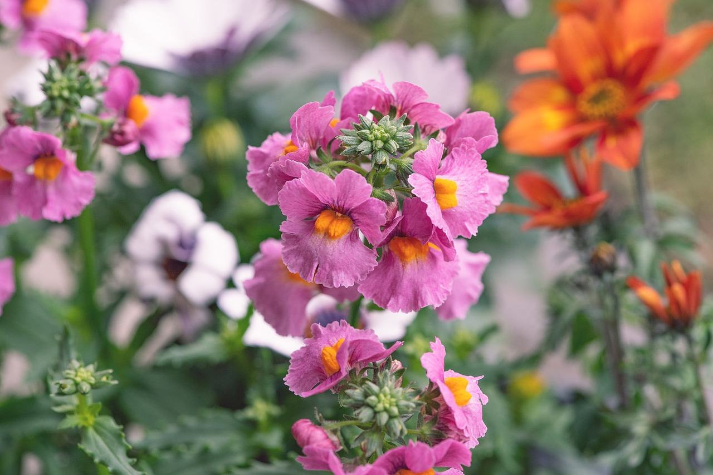

Parties and Thrifting
 have started to thrift my clothes more, I feel really guilty not buying secondhand clothes anymore. Not only does it help the environment but I can save money. However, if I am in a dire need of something then my last resort will be going. Just yesterday I got an invitation to go to my friend’s sweet sixteen birthday party and the dress code was a formal dress, no black, and no glitter or sparkles. I do not have any other formal dress other than the one I wore to my eighth grade graduation which looks atrocious which is black and had sparkles.
The party is going to be this Sunday so I have to find this dress fast! I went to two thrift stores Platos Closet and Uptown Cheapskate. When I first went to Platos, I found a lot of cute dresses but none of them were formal. They were all things I would wear for the spring. While I was there I spotted the cutest sweater vest! I am a sucker for sweater vests, they not only are cute but great to style. Next I went to Uptown Cheapskate, I could not find anything there! They were either really expensive, short, or ugly. My last resort is going to the mall and finding a dress there. I might have to go to Forever 21, H&M, and Burlington. I hope I can find a dress that is not only pretty but modest as I don’t really like showing skin. Wish me luck XOXO!
Music and Dance
My music taste is all over the place. I love Bollywood music, Pop, Latin music, and K-Pop. While I am writing this blog I am listening to K-Pop, particularly the song Polaroid Love by ENHYPEN. I got into K-Pop five years ago, I first started out by stanning BTS and then branching out and eventually leaving the ARMY fandom. I do not know when I started to listen to Latin music but my favorite song from this genre is Livin’ La Vida Loca by Ricky Martin. I grew up listening to Pop and Bollywood music. My favorite Pop song is Woman by Doja Cat, she is my favorite artist and her songs NEVER disappoint. As a child I would always listen to Bollywood music and even dance to it.
My parents always tell me how I used to hold on to the box television and bounce up and down to a Bollywood song called Kajre Ra. I guess you could say this where my passion for dance first started. Growing up I dabbled into many dance styles. I first did ballet, tap, and hip-hop but not for a very long time but this dance taught me how to balance my body weight. I then did many Bollywood dances and a lot of folk dances for 5 years. Now I am doing Kathak, a classical Indian dance which involves rigorous footwork, graceful hand gestures, and beautiful choreographies. I have been doing this dance for 6 years now. Though this dance can be demanding it is fun as I have my friends always beside me to cheer me up and help me. I am going to be taking the hardest exam in Kathak in a few months so wish me luck XOXO!
Graphic Design
My graphic design journey started when I was in sixth grade. My passion for graphic design can be traced back to K-Pop. Little embarrassing, I know. I started out making the cringiest K-Pop graphics, but no one starts out running without crawling. As I made more graphics I developed my skills and learned a lot of the basics of Photoshop but through an app called ibisPaintX. It was a drawing app but it had some of the features of Photoshop. I continued to make these edits until I got into high school.
In high school I took graphic designing classes through a program called AOIT. These graphic designing classes taught me how to use Adobe Illustrator, InDesign, Photoshop, Dreamweaver, Audition, and Premiere Pro. I got certified in the first three applications that I have mentioned. My favorite Adobe applications are Photoshop and Illustrator as they are the ones that I am most familiar with and the least frustrating to work with. I hope to use these skills when I am older or do graphic designing as a side business or for free-lancing. Wish me luck XOXO!